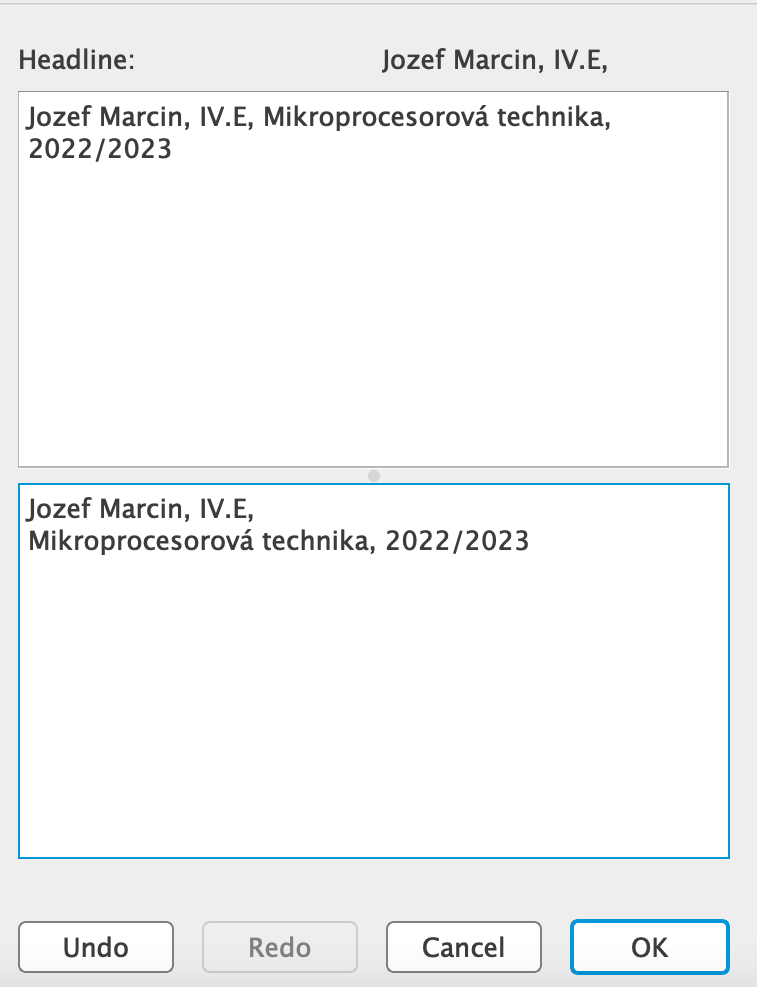

Založenie pracovného adresára s menom žiaka
Skôr, ako začnete kresliť novú schému, vytvorte si vo svojom priečinku napr. Eagle PTM - nový projekt - New Project (napr. Usmernovac)
Spustiť program Eagle, Control Panel.
Options/Directories... - nastavte kurzor do príslušného riadku (Projekts) a cez Browse vyhľadajte váš príslušný adresár, napr. C:\Users\"Meno Použivateľa"\"Meno Priečinku"/Eagle a potvrďte OK.
 Potom rozkliknutím priečinku Projects sa vám sprístupní menu s vašimi vytvorenými priečinkami. Následovným kliknutím pravým tlačidlom myši na váš priečinok sa otvorí kontextové menu a kliknete: Edit Description - pre editáciu popisu. Je vhodné vypísať (v spodnej polovici okna) podobne podľa uvedeného obrázku, keďže projekt si môžu vytvoriť viacerí žiaci z rôznych tried.
Potom rozkliknutím priečinku Projects sa vám sprístupní menu s vašimi vytvorenými priečinkami. Následovným kliknutím pravým tlačidlom myši na váš priečinok sa otvorí kontextové menu a kliknete: Edit Description - pre editáciu popisu. Je vhodné vypísať (v spodnej polovici okna) podobne podľa uvedeného obrázku, keďže projekt si môžu vytvoriť viacerí žiaci z rôznych tried.

Následne kliknete pravým tlačidlom myši na váš vytvorený priečinok v paneli Projects a zvolíte "New Project", pomenujete ho. Pravým tlačidlom myši na váš nový pomenovaný projekt zvolíte New - Schematic.
©2023 Goldmann. All Rights Reserved.
Stredná priemyselná škola dopravná
Košice